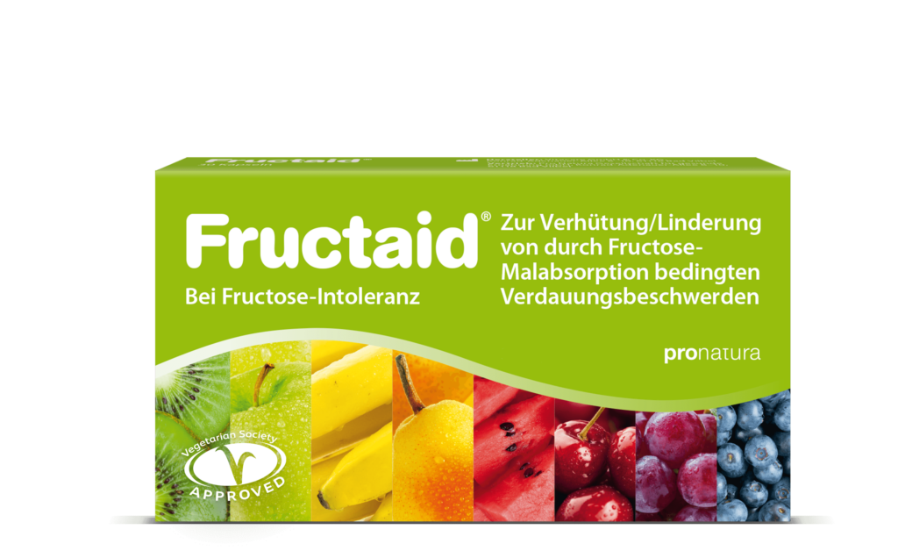

Fructaid®
Das patentierte Medizinprodukt zur Verwendung bei intestinaler Fructose-Intoleranz. Das Enzym Glucose-Isomerase wandelt nicht resorbierte Fructose in gut verträgliche Glucose um – zur Verhütung und Linderung von Fructose-bedingten Verdauungsbeschwerden.
- Patentiertes Medizinprodukt
- Glucose-Isomerase wandelt Fructose in Glucose um
- Für Obst, Gemüse, Säfte und Haushaltszucker
- 1–4 Kapseln vor der Mahlzeit, bis 4×/Tag
Warum Fructaid® hilft
Bei einer Fructose-Malabsorption kann der Dünndarm Fruchtzucker nur eingeschränkt aufnehmen. Die nicht resorbierte Fructose gelangt in den Dickdarm und führt dort zu Blähungen, Bauchschmerzen oder Durchfall.
Fructaid® enthält das Enzym Glucose-Isomerase, das einen Teil der Fructose bereits im Dünndarm in gut resorbierbare Glucose umwandelt. So lassen sich fructosehaltige Lebensmittel wie Obst, Gemüse, Säfte und Haushaltszucker wieder verträglicher genießen.
Früchte & Süßes wieder genießen
Eine Fructoseintoleranz – auch Fruchtzuckerunverträglichkeit oder Fructose-Malabsorption genannt – betrifft etwa jeden Dritten. Mit Fructaid® können Sie wieder Obst, Gemüse, Säfte und alles, was Haushaltszucker enthält, unbeschwert genießen.
Beratung anfragenSo einfach ist die Einnahme
Vor dem Essen einnehmen
1–4 Kapseln kurz vor einer fructosehaltigen Mahlzeit oder einem Getränk mit etwas Flüssigkeit einnehmen.
Enzym wandelt um
Die Glucose-Isomerase wandelt einen Teil der Fructose im Dünndarm in gut verträgliche Glucose um.
Beschwerden vorbeugen
So lassen sich typische Beschwerden durch Fructose-Malabsorption verringern – bis zu viermal täglich.